Intro Bio I (B0160): Modulo Evolucion
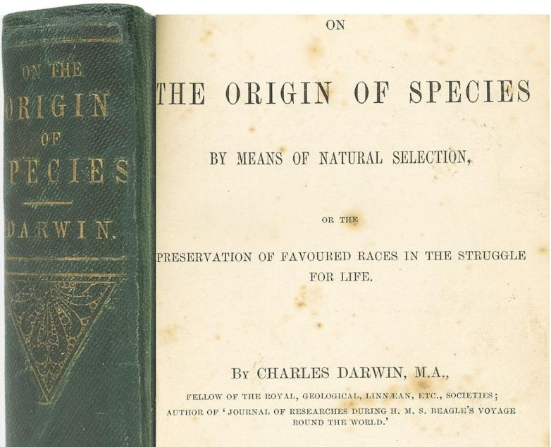
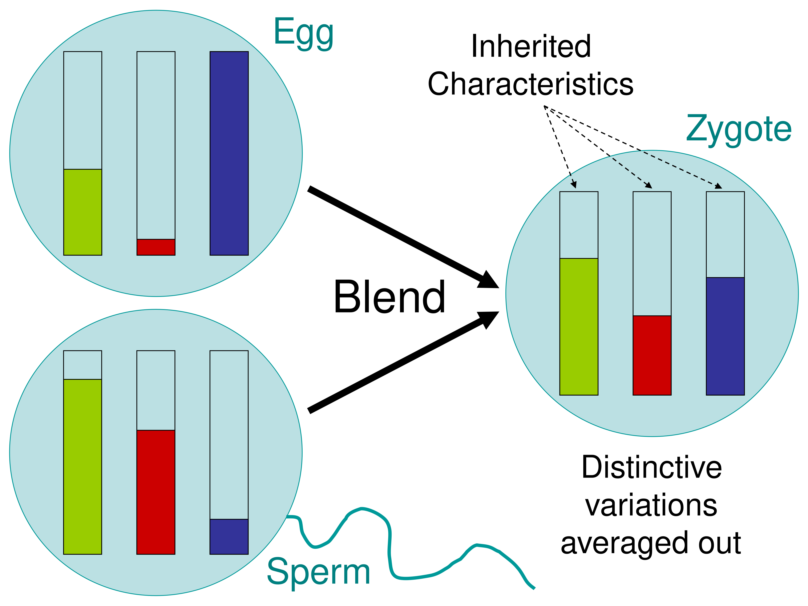
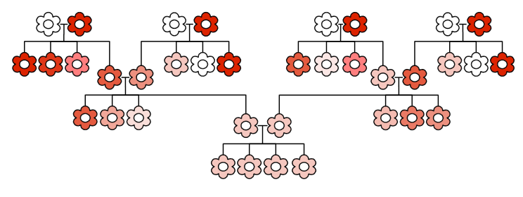
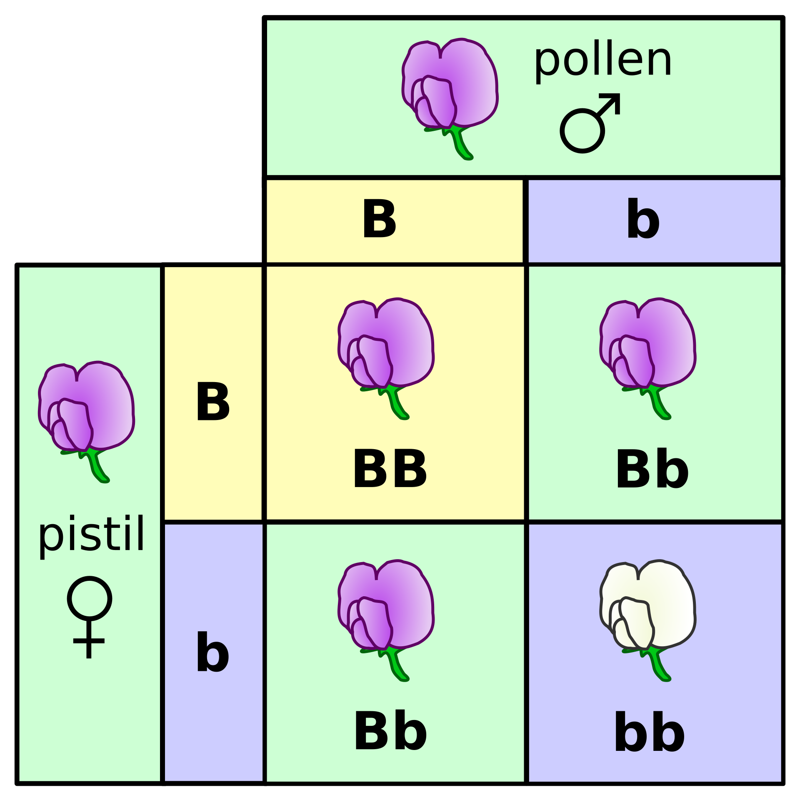
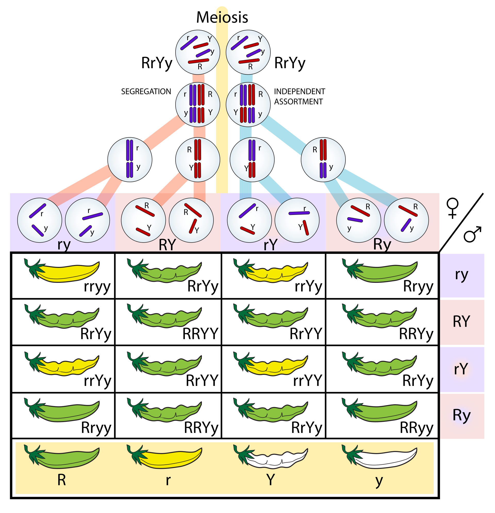
Aumenta la variacion genotipica sobre la que puede actuar la seleccion.
Que esperamos observar si no actua ninguna fuerza evolutiva?
HW describe estabilidad en las frecuencias alélicas de un locus, no ausencia de variación entre individuos.
Si los datos no ajustan, al menos un supuesto puede estar fallando.
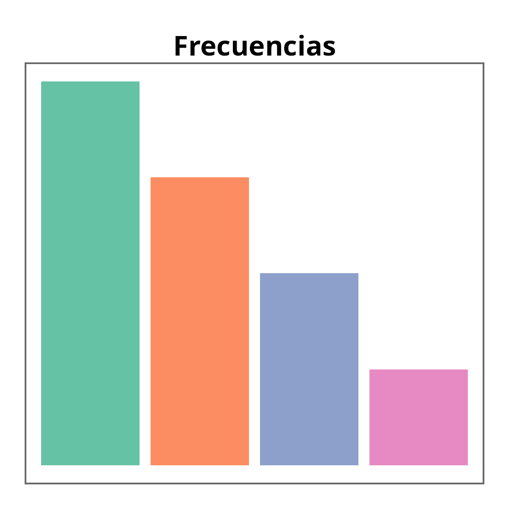
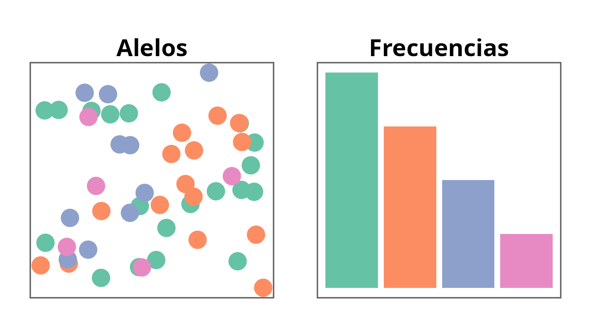
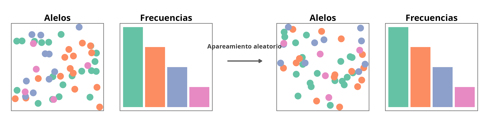
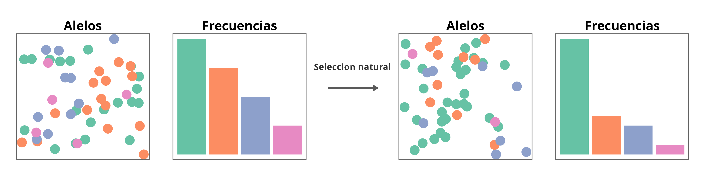
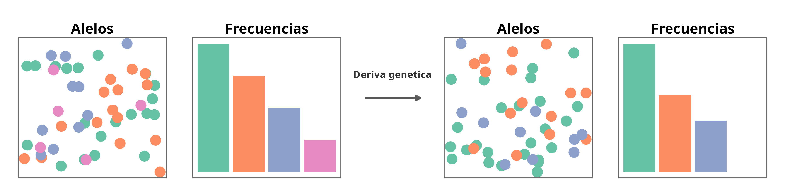
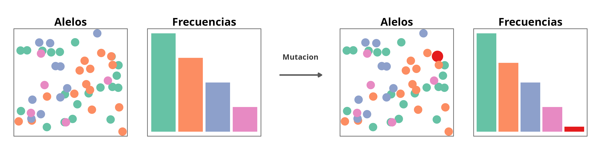
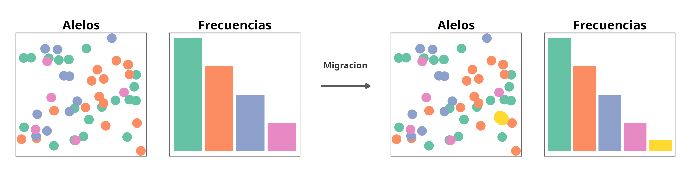
Poblacion de plantas con dos alelos:
Frecuencias:
\[ p + q = 1 \]
\[ p^2 + 2pq + q^2 = 1 \]
Caso 1: ajuste aproximado
Esperado (100): 36, 48, 16
Observado: 36, 46, 18
Compatible con Hardy-Weinberg.
Caso 2: desviacion clara
Esperado (100): 36, 48, 16
Observado: 48, 30, 22
Deficit fuerte de heterocigotos.
Comparamos observado (\(O\)) vs esperado (\(E\)):
\[ \chi^2 = \sum \frac{(O - E)^2}{E} \]
Para cada categoria (aqui, cada genotipo), calculamos la diferencia entre observado y esperado, la escalamos por el esperado, y luego sumamos todas.
El cuadrado hace que todas las desviaciones cuenten como positivas y penaliza mas las diferencias grandes.
Mientras mayor sea \(\chi^2\), mayor es la desviacion respecto a Hardy-Weinberg.
Caso 1: ajuste aproximado
\[ \chi^2 = \frac{(36-36)^2}{36} + \frac{(46-48)^2}{48} + \frac{(18-16)^2}{16} \]
\[ \chi^2 = 0 + 0.083 + 0.25 = 0.333 \]
Valor pequeno: compatible con ajuste aproximado.
Caso 2: desviacion clara
\[ \chi^2 = \frac{(48-36)^2}{36} + \frac{(30-48)^2}{48} + \frac{(22-16)^2}{16} \]
\[ \chi^2 = 4 + 6.75 + 2.25 = 13 \]
Valor grande: desviacion marcada de Hardy-Weinberg.
En el sistema ABO hay 3 alelos en un locus: \(I^A\), \(I^B\) e \(i\).
Frecuencias alelicas: \[ p + q + r = 1 \]
Frecuencias genotipicas esperadas bajo HW: \[ p^2 + q^2 + r^2 + 2pq + 2pr + 2qr = 1 \]
Esto produce 6 clases genotipicas esperadas:
Fenotipos ABO:
Ejemplo clasico de HW con tres alelos: \(I^A\) e \(I^B\) son codominantes, y ambos dominan sobre \(i\).
\[ (p + q)^4 = p^4 + 4p^3q + 6p^2q^2 + 4pq^3 + q^4 \]
Cada termino representa clases genotipicas con 4 copias alelicas (por ejemplo, AAAa, AAaa, Aaaa).
En sistemas no modelo, estimar frecuencias alelicas/genotipicas puede volverse rapidamente complejo.
Hardy-Weinberg no dice que las poblaciones reales “no evolucionan”.
Nos da una referencia para detectar cuando y como pueden estar evolucionando.